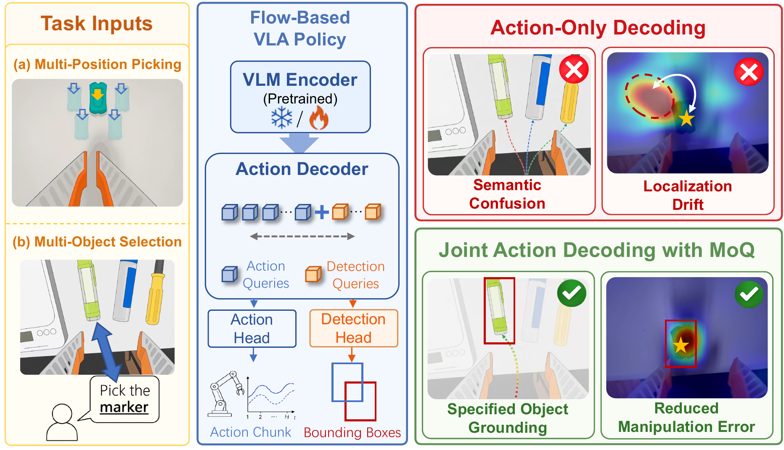
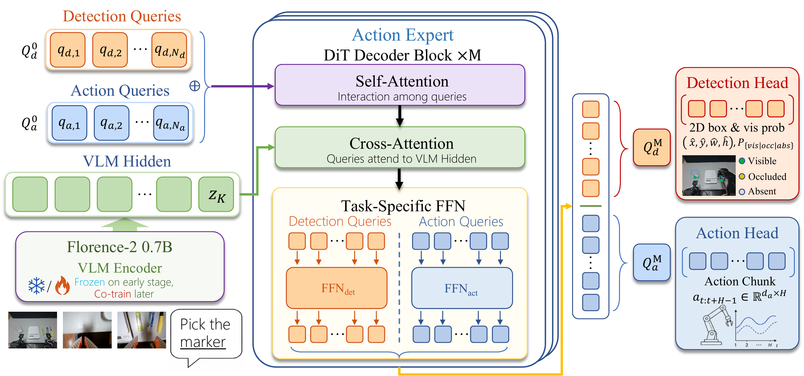
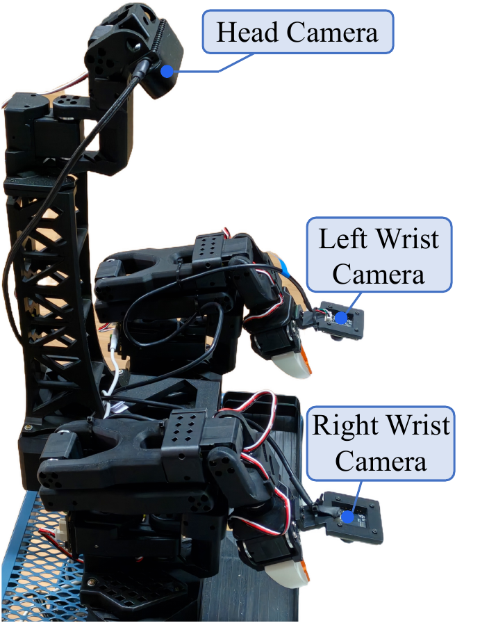
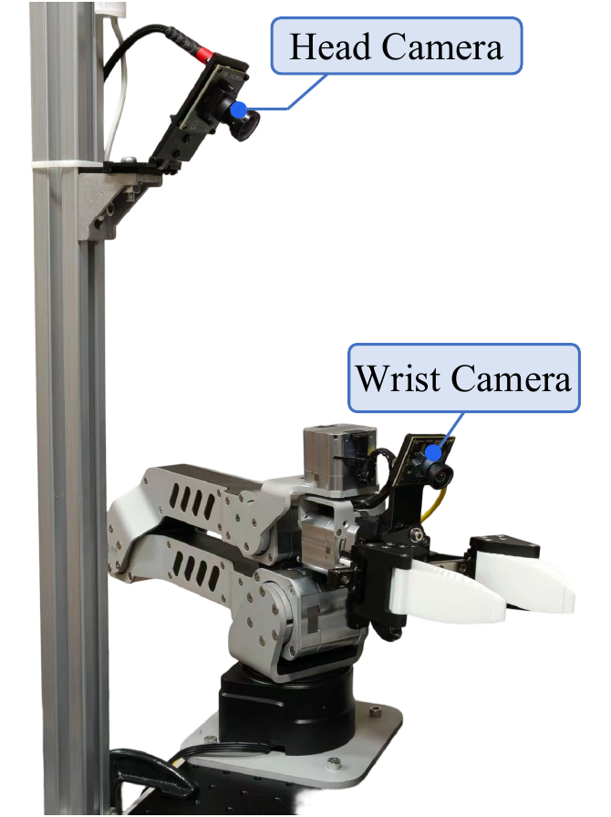
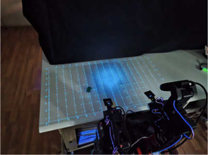
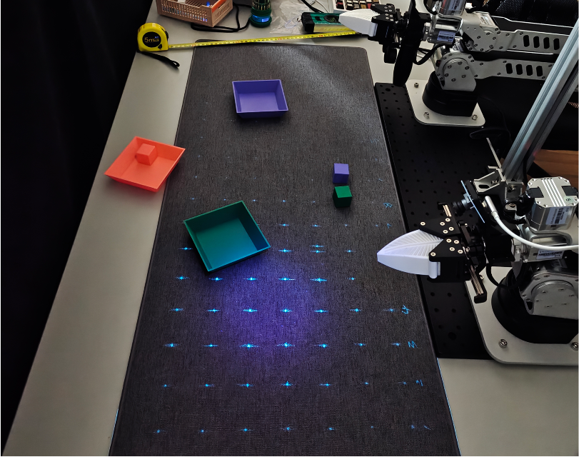

Spatial localization
Improves multi-position pick-and-place by +27.08 pp on the first attempt and +18.75 pp after recovery.
Anonymous submission · Vision–Language–Action
A sparse, decoder-level grounding signal that helps VLA policies identify the right object, target, and grasp-relevant part when generating actions.
Under review
External links are withheld during anonymous review.
01 · Motivation
Behavior cloning constrains the demonstrated action trajectory, but it does not explicitly supervise the semantic identity, spatial location, or manipulation-relevant part that supports that trajectory. This leaves room for positional shortcuts and unstable behavior under layout, lighting, and object-distribution shifts.

02 · Method
MoQ inserts a small set of role-specific detection queries into a DiT-style action decoder. Shared self- and cross-attention enables bidirectional information exchange; task-specific feed-forward pathways and prediction heads preserve the distinct output spaces of continuous control and object detection.

03 · Experimental evidence
We report the complete clean-setting comparison for four physical tasks, the three disturbed physical settings, and both clean and random RoboTwin2.0 evaluations. The evidence follows the six questions used in the paper’s experimental analysis.
RoboTwin clean average over Base-scratch
RoboTwin random average over Base-scratch
Real-world object selection accuracy
Additional parameters
clean random / OOD
Physical experiments · clean setting
| Task | Metric | PI0.5-FT | XVLA-scratch | XVLA-FT | Base-scratch | MoQ-scratch |
|---|---|---|---|---|---|---|
| Multi-position pick & place | First success | 37.50 | 25.00 | 77.08 | 52.08 | 79.17 |
| Recovery success | 54.17 | 35.42 | 91.67 | 72.92 | 91.67 | |
| Multi-object selection & transfer | Transfer success | 92.59 | 88.89 | 96.30 | 100.00 | 100.00 |
| Selection accuracy | 33.33 | 37.04 | 51.85 | 70.37 | 88.89 | |
| Geometric block insertion | Task success | 77.78 | 41.67 | 58.33 | 61.11 | 80.56 |
| Selection accuracy | 100.00 | 58.33 | 94.44 | 88.89 | 88.89 | |
| Insertion accuracy | 77.78 | 71.43 | 61.76 | 68.75 | 90.63 | |
| Mug into holders | Task success | 94.44 | 91.67 | 88.89 | 91.67 | 97.22 |
Physical experiments · disturbed setting
| Task / disturbance | Metric | PI0.5-FT | XVLA-scratch | XVLA-FT | Base-scratch | MoQ-scratch |
|---|---|---|---|---|---|---|
| Multi-position pick & place + random light | First success | 33.33 | 18.75 | 75.00 | 31.25 | 75.00 |
| Recovery success | 47.92 | 20.83 | 89.58 | 37.50 | 87.50 | |
| Geometric block insertion + clutter | Task success | 50.00 | 19.44 | 36.11 | 55.56 | 75.00 |
| Selection accuracy | 97.22 | 52.78 | 86.11 | 80.56 | 88.89 | |
| Insertion accuracy | 51.43 | 36.84 | 41.94 | 68.97 | 84.38 | |
| Mug into holders + random light | Task success | 77.78 | 88.89 | 86.11 | 88.89 | 91.67 |
Green: highest value in each rowYellow: second-highest value in each row
Six answers from the paper
Improves multi-position pick-and-place by +27.08 pp on the first attempt and +18.75 pp after recovery.
Raises correct object selection from 70.37% to 88.89% under randomized layouts.
Raises insertion accuracy from 68.75% to 90.63% through better spatial conditioning.
Improves mug-into-holder success from 91.67% to 97.22% by grounding the handle.
Under unseen colored lighting, improves first-attempt and recovery success by +43.75 pp and +50.00 pp.
In cluttered insertion, reaches 75.00% task success and 84.38% insertion accuracy.
04 · Physical setup & overview
We evaluate MoQ on a dual-arm 5-DoF setup with a head camera and two wrist cameras, and a single-arm 6-DoF setup with a head and wrist camera. The following grid layout and platform views define the physical evaluation protocol.


Multi-position evaluation layout
The multi-position pick-and-place task places the object on a 5 cm grid. Each arm is evaluated over a 4 × 3 set of test positions, isolating spatial localization and recovery behavior from object identity changes.


Third-person demonstrations
These four clips, extracted from the provided presentation, show the physical scene from an independent third-person viewpoint before the camera-recorded experiment videos.
05 · Camera-aligned real-world demonstrations
Each clean task is recorded from the head and wrist cameras used by the policy. Tasks 1, 3, and 4 are shown as a single two-view row; task 2 retains all three available camera views. Below each recording, the original PPT detection frames are kept as individual images: head frames form one row and wrist frames form separate row(s). Hover, focus, or tap any frame to inspect that specific frame.
Spatial generalization · 2 views
Head camera · 4 detection frames
Right wrist camera · 4 detection frames
Language-conditioned grounding · 3 views
Head camera · 5 detection frames
Left wrist camera · 5 detection frames
Right wrist camera · 5 detection frames
Shape-aware manipulation · 2 views
Head camera · 4 detection frames
Left wrist camera · 4 detection frames
Target-aware placement · 2 views
Head camera · 4 detection frames
Left wrist camera · 4 detection frames
Real-world disturbed settings
These demo videos correspond to the disturbed evaluations reported above: random colored lighting for tasks 1 and 4, and unseen tabletop clutter for task 3.
Head camera
Right wrist camera
Head camera
Left wrist camera
Head camera
Left wrist camera
07 · RoboTwin2.0 experiment recordings
For each selected RoboTwin2.0 task, the clean and random clips are displayed together. The random setting is held out during training and probes robustness to cluttered textures and visual distractors.
MoQ